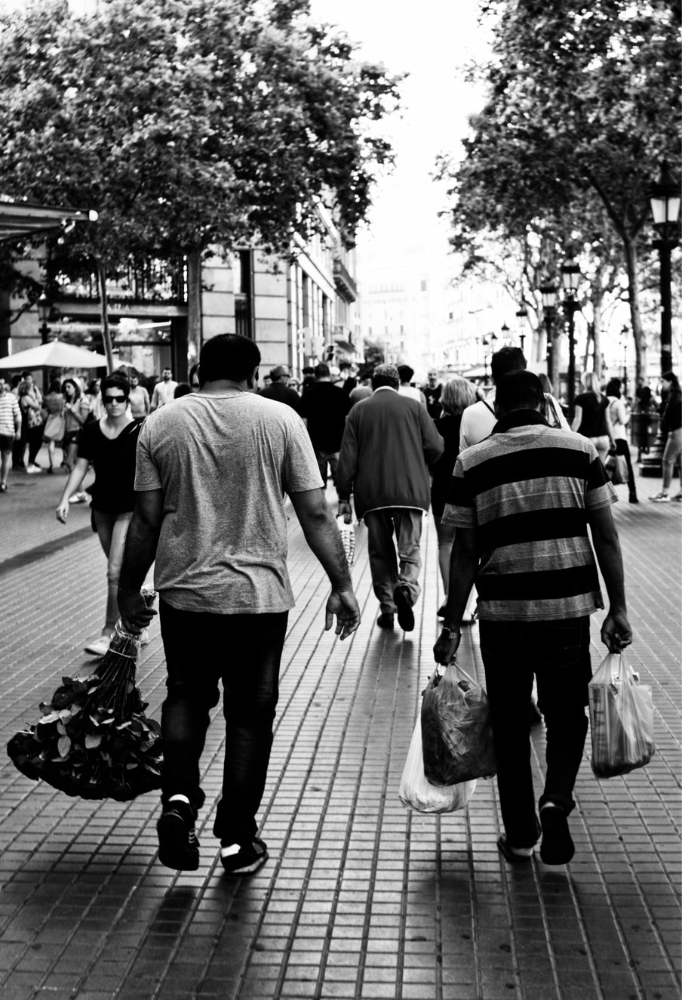
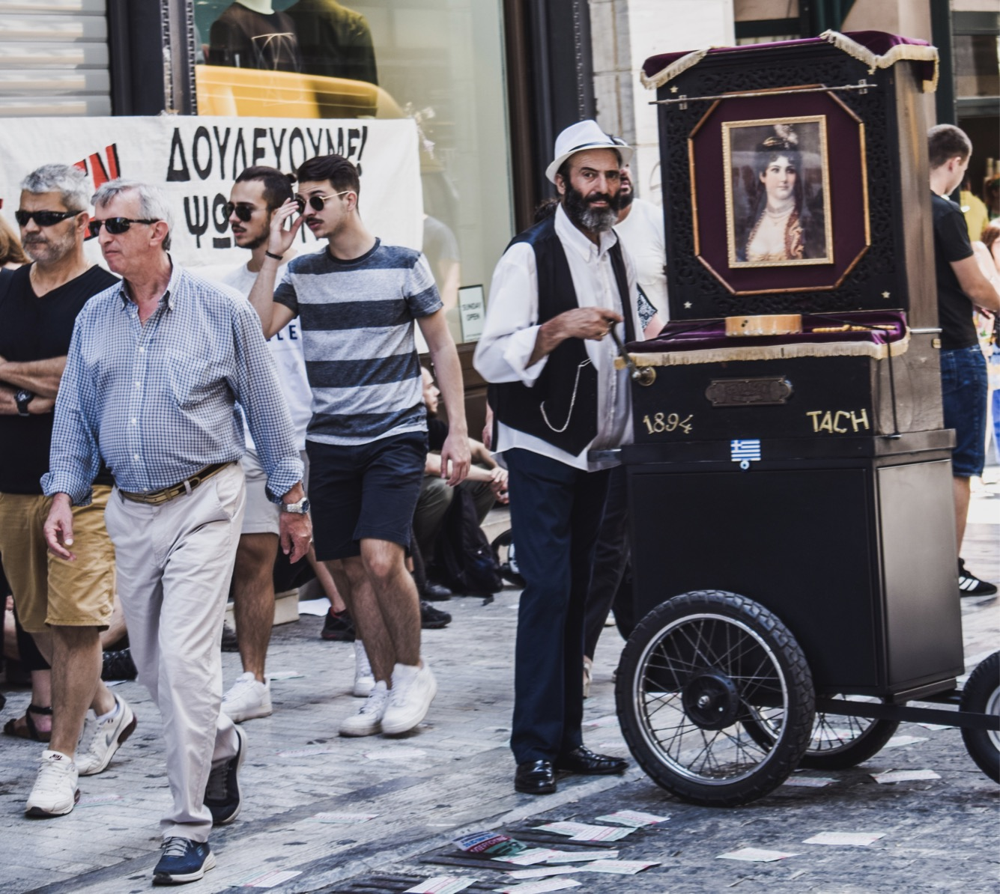
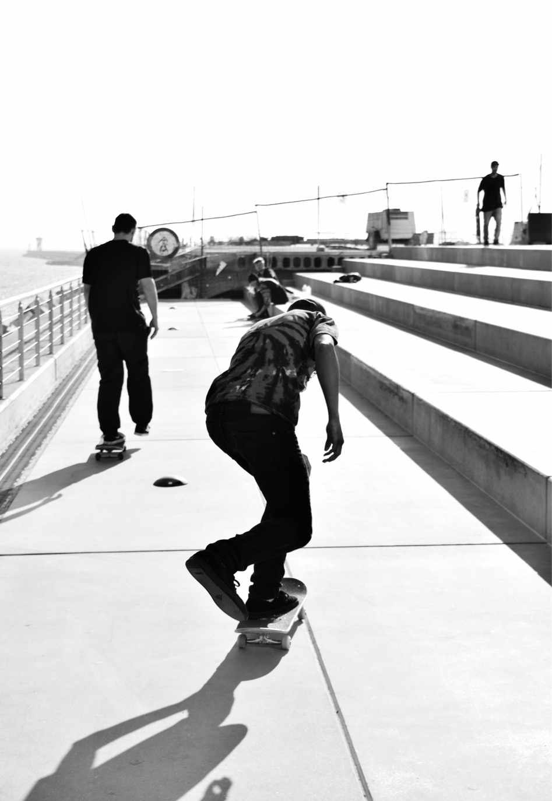
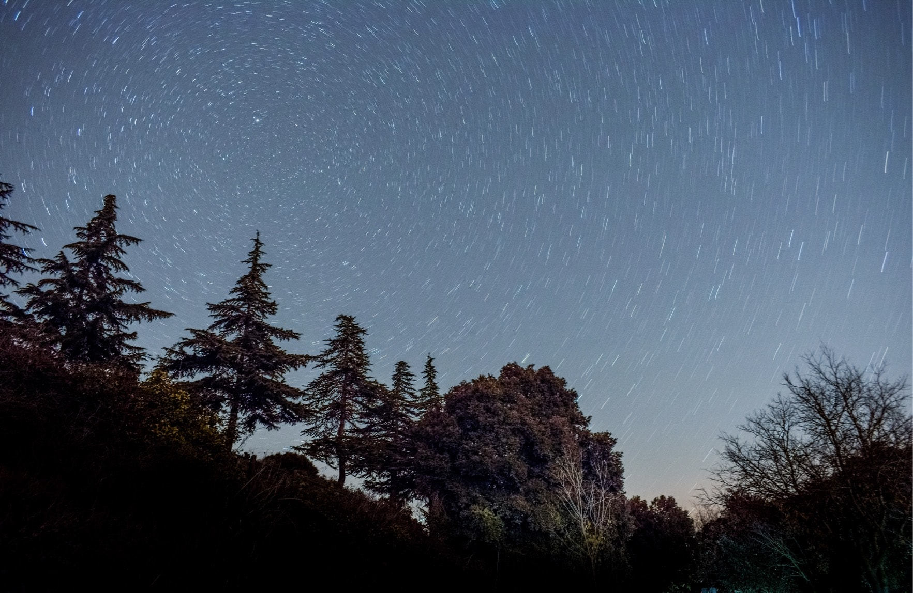

Statement
El cel comença a posar-se vermell, passen els cotxes, a distància, passa la gent, passegen, compren, mengen i beuen. Mentrestant, estic en un món totalment diferent, quiet i silenciós, concretament a la biblioteca, davant la finestra. Això diu molt de mi. Sempre observant nostàlgic la llibertat del carrer mentre estudio, sempre observant. Per cert, em dic Pau Ballesté Aguirre i, com Nietzsche, crec que la vida sense música seria un error, però també ho seria sense cinema o fotografia. Aquestes tres arts s'han convertit en una passió personal, i en una forma d'expressar el que veig i com ho veig. Des de les estrelles al carrer o des de la ficció a la realitat i tot això, amb bona música sempre.
Ja de ben petit feia fotos amb una càmera senzilla del meu pare, després vaig agafar una rèflex de la meva mare, amb la que vaig aprendre realment a retratar la vida. El que més m’agradava era la fotografia de carrer. Veia, i veig, mirades en les persones, gestos quotidians, i d’altres més peculiars, que mereixien ser retratats. Manifestacions, vagues, gent caminant, autobusos plens de cares series, nens rient ... Intentava, i intento, capturar el reflex d’una societat dins la meva joguina preferida. Després vaig decidir incorporar el vídeo. Fotografies de carrer en moviment que, amb música, esdevenien la combinació perfecta. Des d’aquí un nou món s’obria davant meu: el cinema. En definitiva, el cinema és per a mi la forma d’endinsar-me en les històries de cada persona que podria haver fotografiat un dia qualsevol, però també, la forma de plasmar els somnis i les utopies.
En el meu cas, després de la secundària trobava el batxillerat artístic força distant i vaig començar a cursar el tecnològic. Només al primer mes ja me’n vaig adonar que no m'agradava. Vist això vaig decidir que el havia de fer el TdR per gaudir-lo. Vaig escollir fer un curt. Sempre havia fet vídeos de viatges i de carrer, i els faig i els seguiré fent, però mai havia gravat cap narració. Així que, entre exàmens i treballs, quan volia descansar i desconnectar, escrivia. Hi havia dins meu una sensació d’irresponsabilitat ja que no estava estudiant, com la tinc ara per no estudiar pels exàmens finals de segon. Tot i així, m’esvaïa del context de primer per una estona. Durant l’estiu vam gravar el curt, nostàlgic en essència. Després, quan vaig poder, a segon, vaig fer el canvi cap al social. S'acostava més al que volia fer, encara que no ha acabat d'entrar dins meu.
Després d’això et fan escollir quina carrera vols cursar, passant primer per l’estressant selectivitat. Dubtava entre diverses. No sabia si disseny, comunicació audiovisual la trobava massa ambigua, mitjans audiovisuals, o cinema. Sempre havia tingut la idea de l’ESCAC dins el meu cap. Hi havia molt mite sobre l’escola, com una cosa totalment aliena a mi, que s’ha tornat bona a través de converses amb estudiants amb les i els que he pogut parlar. La idea que se m’ha transmès de l’ESCAC és la d’un lloc on aprendre de forma diferent, creant i gravant mentre coneixes gent d’altres cursos amb qui practicar, i tot això, estudiant de valent, formant part de la “secta” sobre la qual es parla amb cert humor.
Finalment, he de dir que la raó principal per la que vull entrar a l’escola, no és cap altra que la meva forma de ser, una persona amb un neguit insaciable de crear, d’anar acompanyat allà on sigui d’una càmera, de capturar allò rellevant dins la vida, de pensar i filosofar, amb bona música sempre.
Portfolio
Fotografia
"Obriu les fronteres"
Una fotografia que reflexa la voluntat d'un poble que vol ajudar a un altre
2017
"Flors caigudes"
O com dues persones es guanyen la vida venent flors
2017
"Street Art"
Tres realitats d'Atenes unides en un mateix espai
2017
"Tranquil·litat i seguretat"
Una tarda calmada a Barcelona
2017
"Estrelles ballant al voltant de l'Estrella Polar"
Foto circumpolar, Mura
2017
Projectes
"La sala"
La sala és un curtmetratge realitzat al març del 2018. Per a la seva producció es va dur a terme un procés creatiu.
La idea inicial per a elaborar aquest curt era crear un concepte futurista amb les possibilitats de les que disposava. Un dia de sobte em vaig imaginar un local, amb un noi, i uns plans molt oberts i calmats.Vaig decidir buscar diverses idees i vaig mirar diferents capítols de la seria "Black Mirror" per a inspirar-me.Seguidament vaig començar a escriure el guió (el procés complet es troba al final de la web, on hi ha els continguts en l'enllaç a una carpeta de Google Drive, dins aquesta hi ha tots els continguts de la web, tan fotos, com vídeos com textos).
"De nit"
De nit és un curtmetratge realitzat a l'abril del 2018, amb l'aparició de l'Ilias Khayat,
el Biel Carmona, el Joan Martí i l'Adrià Olmos.
Tot el procés està detallat al document adjuntat a l'enllaç a la carpeta digital al final de la pàgina.
"Temps"
Aquest és el curt realitzat com a part pràctica del Treball de Recerca de Batxillerat.
Amb la participació de Jaume Oliva, Ilias Khayat, Marc Gàllego, Gabriel Alujas,
Hèctor muñoz, Jeremies Soler, Carles Masip, Jordi Ballesté i Candi Aguirre.
"Migrants"
Migrants és el resultat d'una entrevista feta per un treball de l'institut sobre l'immigració a Catalunya als anys 50-60.
So
Més...
Carpeta Digital
Aquí podeu trobar tots els continguts del lloc web, i com s'ha dit, les explicacions respectives dels processos dels projectes.